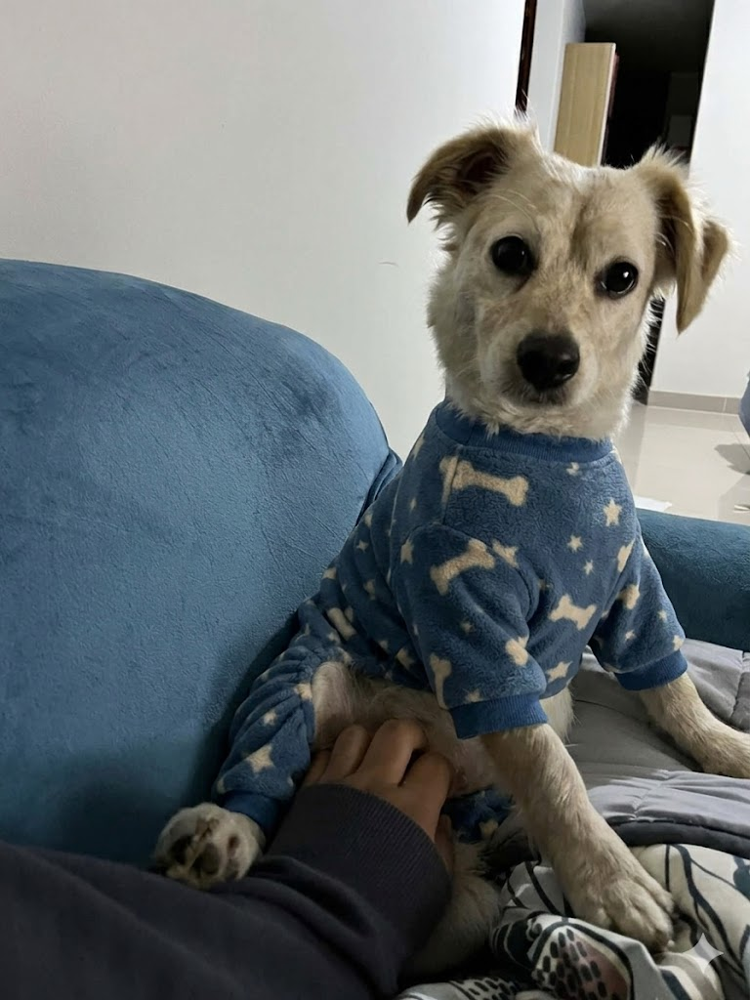
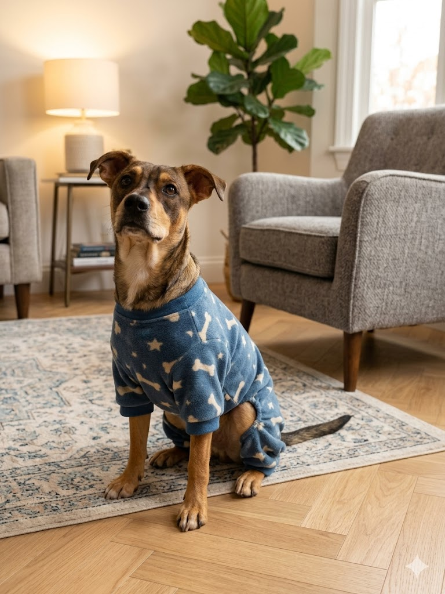

Buscamos hogares llenos de amor y responsabilidad.

Edad: 1 Año y 9 meses | Peso: 8.500 kg | Tamaño: Pequeña
Personalidad: Protectora, cariñosa y tranquila. Le encanta dormir al sol, en el piso en el sofa en todo lado, le gusta jugar con sus juguetes.
Salud: Vacunada, desparasitada y en perfecto estado.

Edad: 1 Año y 11 meses | Peso: 10 kg | Tamaño: Mediano
Personalidad: Juguetón, enérgico,nacio con cola pequeña, protector y muy inteligente.
Salud: Vacunado y desparasitado.